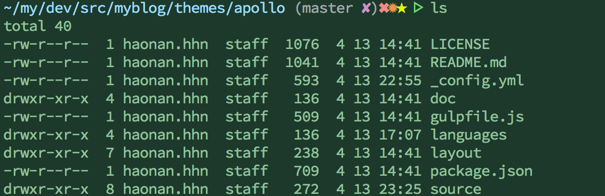

Hexo的apollo主题修改
本站的主题修改自apollo, 一般在hexo中使用一个主题的方式是
cd myblog && git clone ${gitHub repo url} themes/${themeName}
然后修改_config.yml下面的theme为 ${themeName} 即可。如果主题没有生效就重新hexo server一下,因为有的主题的模板是需要重新编译的
主题修改前的样式可移步作者的blog
发现作者是来自美团的一位前端小伙子 而且是92年的哟 好腻害 (* - *)
主题文件夹的结构
经复杂的统计学规律经过大量运算最终ls一下发现主题文件夹大致分为以下几个目录

我们需要关注的是这几个目录和文件
| 资源 | 说明 |
|---|---|
| _config.xml | 总的配置文件 类似于pom.xml 你懂的 |
| layout | 这个文件夹存放了theme的模板文件, 如果需要改变模板的文件结构可以修改本目录下面的文件, 采用的模板引擎是jade |
| source | 存放了css等资源文件 这里的css是压缩过的 一般我们用工具例如sublime的css format插件还原了并修改了以后 最好是能压缩一下再保存 节省网络流量 |
修改策略
换背景图, 我比较喜欢微信公众号那种上面有个大的banner的，可以给
apollo.css里面的header这个样式加上background“关于”这个页面 通过hexo new page ‘about’来实现 就能拿到一个单独的page
hexo的post的url一般是
:year:month:day/:title这样, 比较长, 如果你需要短一点的 可以在myblog的_config.yml里面修改permalink这个属性反复刷新页面时, 可以看到经常会遇到一个”正在请求fonts.useso.com”字样的提示消息出现在chrome的左下角, 说明现在有一些资源是pending的状态，查看一下网络请求发现主要是2个:
MathJax.js 这是一个用来绘制公式的js库 如果不需要的话就删了吧 或者可以把它下载下来 用本地的方式 但是它内部会默默地下载3个文件 还是从源站… 如果要一网打尽的话就要全部下载下来然后修改里面的地址 所以我放弃了 现在还是404小红叉 >.<|||
字体文件 以前没有接触过
font-face, 这是一个css3的属性，支持从远程url上下载自定义的字体文件而不局限于浏览器本地的可用字体, 之前看到的那个fonts.useso.com是360提供的一个字体CDN，不知道为什么会一直pending, 现在换成了google的cdn好一点了
[完]
宣小鱼!
by 大狮